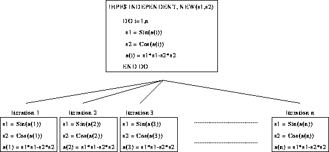

In order to parallelise DO-loops NEW instances of s1 and s2 may be needed for each iteration of the loop:

Iteration 1 has its own versions of s1 and s2, as does iteration 2 and so on up to iteration n.
Cannot apply NEW clause to FORALL.
For more information, click here